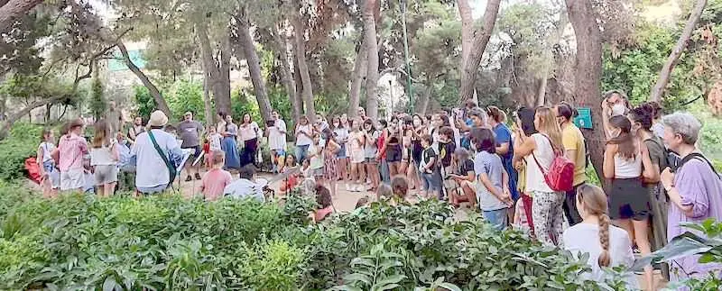

Faltso Art
A music and theatre group for children that I co-founded with Daphne Kammenou and ran for five years: the programmes, the rehearsals, the performances, and the site.
§ 01
A small organisation is also a system.
Faltso Art worked in schools, neighbourhoods, and community spaces: music groups, a choir, theatre, and creative learning for children.
Daphne Kammenou and I started the group in 2019. The belief was plain: the performing arts give children of every age a way to be heard, and a group works best when it is inclusive and open to difference. We built groups across ages and technical levels. Our role was to coordinate first and teach second.
When the pandemic closed the rooms we used, the work moved outdoors, to parks and public squares. The guitar and the voices kept going.

§ 02
Four programmes, one weekly practice.
Each programme ran weekly. I taught, wrote the scores and arrangements, and shaped the repertoire with the students. The year ended in a performance for friends and parents.
Rock Band
Guitars, drums, voices
We built bands around the players we had, including the Rock Explorers, and arranged classic rock and soul for them.
Group Singing
Choir
A weekly choir: body and voice warm-ups, group games, Greek songwriters, traditional songs, Broadway, and classical choral.
Music-movement Play
Singing and movement
Spring sessions in gardens and squares; winter sessions indoors. Songs, rhythm, and movement, led by live guitar.
Music & Programming
Sonic Pi, live coding
Children made music by writing code: sequences, loops, control flow, data structures, and synchronisation.
Across 2021 and 2022 the groups made an original musical, Rock Hotel. The children wrote and rehearsed the songs with us, built the sets and costumes, and performed it for friends and parents.
In the summers the bands played outdoors. In 2021 a school rock band gave two concerts in Kitsiki Square.
§ 03
Pedagogy, inclusion, and communication.
The job was to build the conditions in which children would take part, and to keep the group talking to itself.
Inclusion was the method: mixed ages, mixed levels, and no cult of technical perfection. The work was to make room for each child's idea and fold it into the repertoire.
A small organisation is a system, and most of its failures are communication failures. The same held for the group: who was coming, what we were playing, when we performed, and who was telling the parents.
I also built and maintained the site: Jekyll, Tailwind, and a PostCSS build, 76 commits. It is still live.
Images and numbers. The photographs come from the group's own site and are published with the families' consent. No enrolment, participant, revenue, or school counts are published.